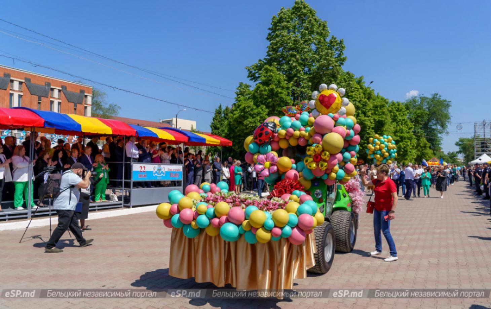

Tradițiile Orașului Bălți

Bălți, cunoscut drept „Capitala de Nord” a Republicii Moldova, păstrează un mix vibrant de tradiții moldovenești autentice, moștenire multiculturală și obiceiuri urbane care s-au consolidat de-a lungul secolelor. Sărbători și Festivaluri Locale Hramul Orașului (22 mai): Cea mai importantă sărbătoare locală, dedicată Sfântului Nicolae, patronul spiritual al orașului. Se organizează concerte în Piața Vasile Alecsandri, parade ale colectivelor artistice și târguri de meșteșuguri. Festivalul Tradițiilor Românești: Un eveniment care promovează portul popular, dansul și cântecul autentic, reunind ansambluri din regiune. Sărbătorile de Iarnă: Bălțiul este faimos pentru fastul cu care sărbătorește Crăciunul și Anul Nou. Cetele de colindători, urătorii și „Malanca” (un joc cu măști specific zonei de nord) sunt prezențe vii pe străzile orașului.
| Dată / Perioadă | Eveniment | Locație / Detalii |
|---|---|---|
| 1 - 10 Martie | Festivalul „Mărțișor” | Palatul Municipal de Cultură |
| 22 Mai | Hramul Orașului | Piața Vasile Alecsandri |
| 24 Iunie | Sânzienele | Centrul „Zestrea neamului” |
| 27 August | Ziua Independenței | Monumentul lui Ștefan cel Mare |
| Octombrie | Toamna de Aur | Parcul „Andrieș” / Zone pietonale |